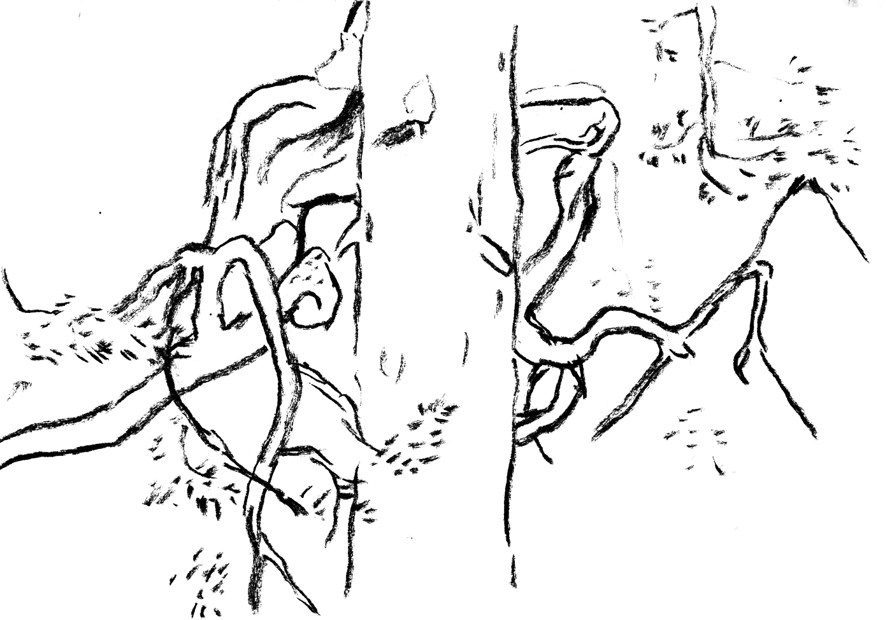

economy
selection thinning
A few key moments in history have had a big effect on our forests, one of them being the second world war. Starting from the energy crisis during the war and under the following economic stress Finland started seeing its forests primarily as an economic resource. After the war Finland was obliged to pay war reparations to the Soviet Union worth equivalent to US$5.78 billion in 2021.
In 1948 six prominent figures in forestry signed a declaration against selection thinning, which was the dominant type of logging practice of its time. It means selecting and cutting only the biggest trees in a forest. The declaration was said to prevent deterioration of forests due to thinning, although the actual reason was to meet the demands of the industry.
Clearcutting became the dominant – and effectively the only accepted – practice of forest management. By the end of the 1940’s 90% of Finland’s export revenues came from cellulose, paper and timber. Forest owners following the harsinta practice were even sued for “ruining the forests” in the 70’s and 80’s. Research of benefits of selection thinning were disregarded. Only after 90’s the ruling practice of clearcutting was challenged by an apparently new concept of continuous cover forestry, which follows the same principle as the forgotten harsinta. It’s now accepted as an equal alternative, with promising benefits for biodiversity and can also be profitable for land owners.
Sources:
Metsä meidän jälkeemme